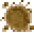

Gravel Path
| Gravel Path | |
|  | |
| Place on the ground to create paths or to spruce up your floors. | |
| Information | |
| Source | Crafting |
| Sell Price | |
| Crafting | |
| Recipe Source | Starter |
| Ingredients | |
The Gravel Path is a crafted decor item. It is used to create decorative paths on the farm. It can be displaced by lightning or destroyed by weeds.
The recipe is already in the player's inventory when the game starts.
All types of pathing provide a +0.1 boost to Player Speed, but only if it is located outside on The Farm. They also have the indirect benefit of preventing Grass or Trees from growing in heavily used areas, which would otherwise slow down or obstruct movement.
Gifting
| Villager Reactions
| |
|---|---|
| Dislike | |
Gallery
Images showing how it appears when placed:
History
- 1.4: Added unique Winter appearance.
| Decor | |
|---|---|
| Floors | Brick Floor • Crystal Floor • Rustic Plank Floor • Stone Floor • Stone Walkway Floor • Straw Floor • Weathered Floor • Wood Floor |
| Paths | Cobblestone Path • Crystal Path • Gravel Path • Stepping Stone Path • Wood Path |